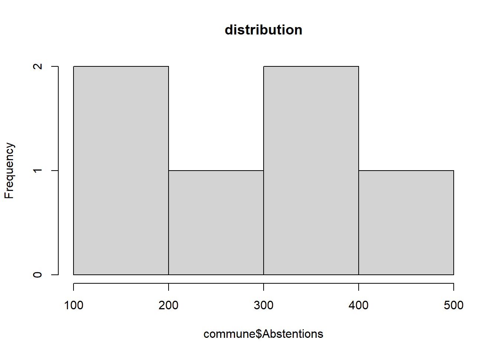
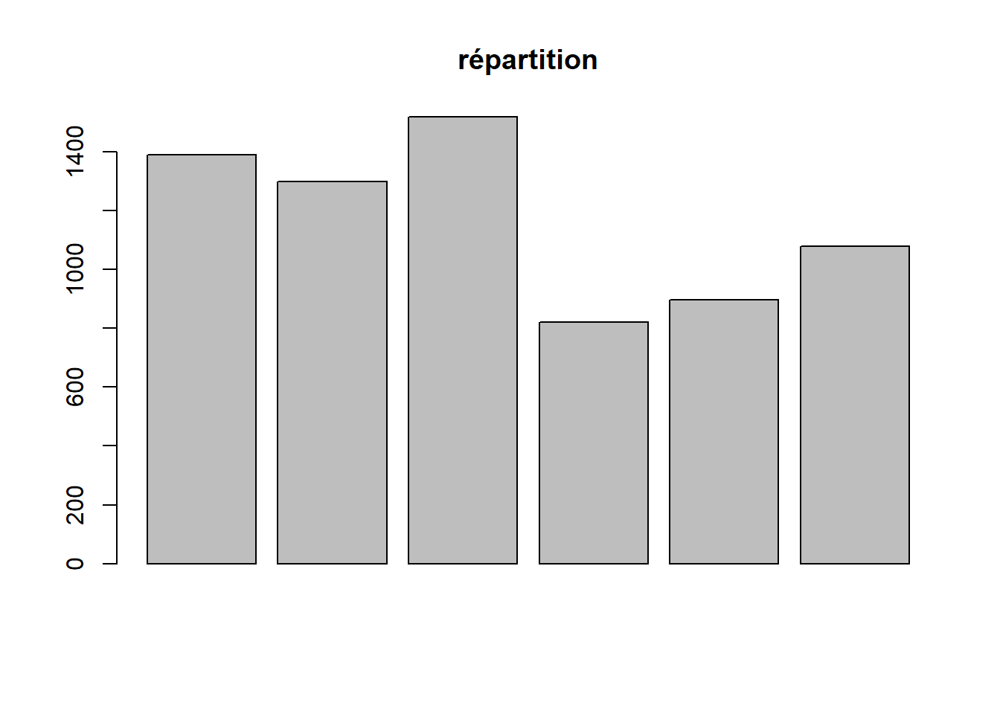
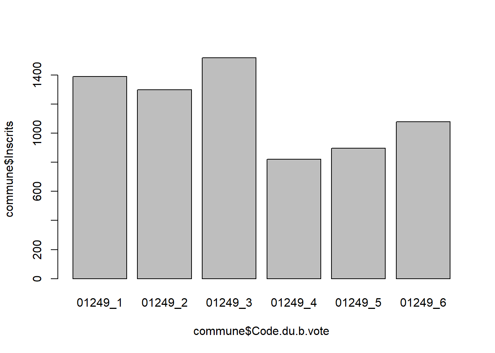
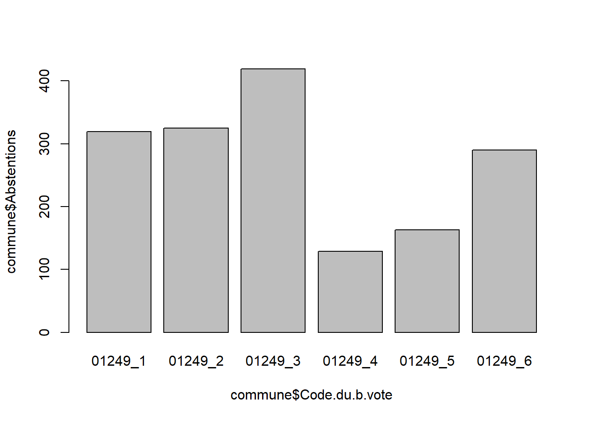
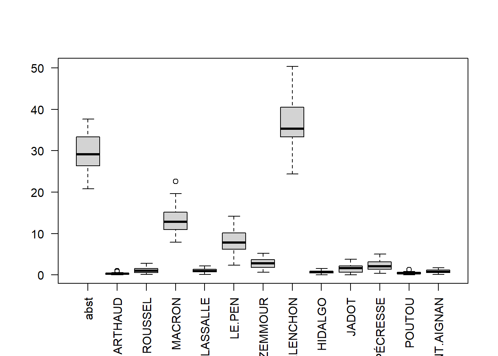
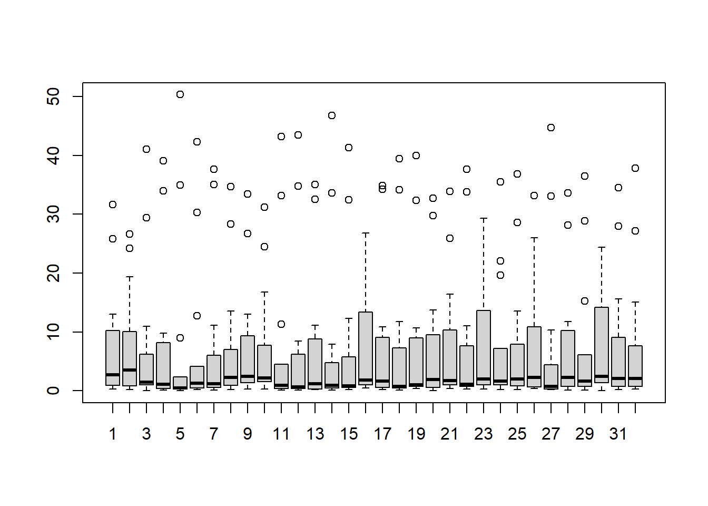
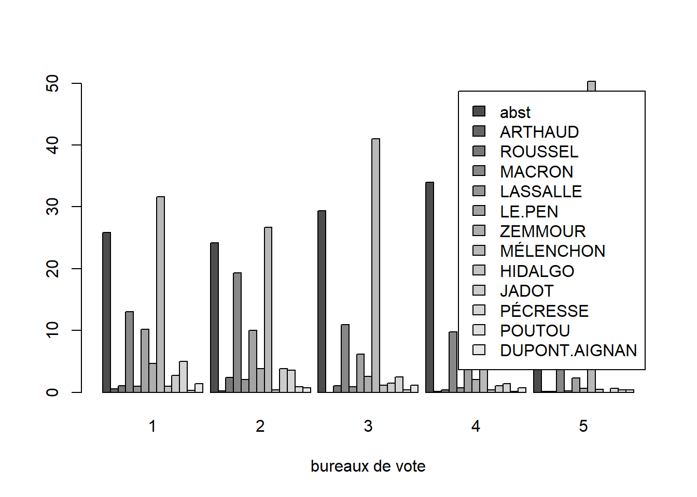

11 étudiants ont déposé un script multivarié pour remplacer l’heure de cours non effectuée lundi 27 novembre.
Le retour est personnalisé.
## Linking to GEOS 3.9.3, GDAL 3.5.2, PROJ 8.2.1; sf_use_s2() is TRUE## [1] "carlotta.pdf"
## [2] "carlottaCorrige.R"
## [3] "Céline.pdf"
## [4] "Clément.pdf"
## [5] "HugoH.R"
## [6] "HugoHCORRIGE.R"
## [7] "KaleenAkaash.pdf"
## [8] "KaleenAkaashCorrige.R"
## [9] "Lina .pdf"
## [10] "Orlane Script ACP et classification .R"
## [11] "OrlaneCORRIGE .R"
## [12] "pierreCORRIGE.R"
## [13] "priyanka.R"
## [14] "priyankaCORRIGE.R"
## [15] "priyankaR.pdf"
## [16] "Rafael.R"
## [17] "RafaelCORRIGE.R"
## [18] "script R 27nov.pdf"fic <- fic[-(grep("CORRIGE|orrige", fic))]
extension <- NULL
for (f in fic){
nb <- nchar(f)
extension <- c(extension, substring(f, nb-1, nb))
}
table(extension)## extension
## .R df
## 4 74 scripts R et 7 pdf
##
## 1150 1249 6083 6088 10387 12202 13005 13055 14118 14228 14514 15012 17299
## 1 6 27 252 30 18 37 481 57 5 5 5 20
## 24294 24322 29075 45203 51454 57672 59553 69034 69244 69264 69381 71342 72154
## 7 21 16 5 105 29 6 37 15 21 17 7 17
## 72181 73008 74012 76217 77083 78005 78190 78358 78361 78396 78551 78646 80021
## 98 22 17 26 12 12 7 16 21 5 32 42 72
## 85163 89024 91021 91272 91377 91471 91657 92004 92023 92026 92040 92044 92046
## 5 31 5 16 26 12 21 44 37 55 47 44 22
## 92048 92051 92063 92073 93010 93031 93063 93070 94019 94022 94028 94033 94038
## 32 40 55 32 32 26 13 28 12 22 46 33 19
## 94041 94044 94068 94081 95127 95582 97120
## 33 13 42 50 35 17 22##
## 01150 01249 06083 06088 10387 12202 13005 13055 14118 14228 14514 15012 17299
## 1 6 27 252 30 18 37 481 57 5 5 5 20
## 24294 24322 29075 45203 51454 57672 59553 69034 69244 69264 69381 71342 72154
## 7 21 16 5 105 29 6 37 15 21 17 7 17
## 72181 73008 74012 76217 77083 78005 78190 78358 78361 78396 78551 78646 80021
## 98 22 17 26 12 12 7 16 21 5 32 42 72
## 85163 89024 91021 91272 91377 91471 91657 92004 92023 92026 92040 92044 92046
## 5 31 5 16 26 12 21 44 37 55 47 44 22
## 92048 92051 92063 92073 93010 93031 93063 93070 94019 94022 94028 94033 94038
## 32 40 55 32 32 26 13 28 12 22 46 33 19
## 94041 94044 94068 94081 95127 95582 97120
## 33 13 42 50 35 17 22## [1] "01249_1" "01249_2" "01249_3" "01249_4" "01249_5" "01249_6"rownames(commune) <- c(1:6)
# toujours regarder le résultat, ici sur les 4 premières colonnes
head(commune)[,1:4]## Code.du.département Libellé.du.département Code.de.la.circonscription
## 1 01 Ain 2
## 2 01 Ain 2
## 3 01 Ain 2
## 4 01 Ain 2
## 5 01 Ain 2
## 6 01 Ain 2
## Libellé.de.la.circonscription
## 1 2ème circonscription
## 2 2ème circonscription
## 3 2ème circonscription
## 4 2ème circonscription
## 5 2ème circonscription
## 6 2ème circonscription## png
## 2

Mais aussi pour comparer les bureaux


Plus délicat
Il faut transformer en matrice
data <- read.csv("data/pctBondy.csv")
data <- data [,-1]
# suppression 1e colonne si nécessaire
matrice <- as.matrix(data)
boxplot(matrice, las= 2)

## [1] "abst" "ARTHAUD" "ROUSSEL" "MACRON"
## [5] "LASSALLE" "LE.PEN" "ZEMMOUR" "MÉLENCHON"
## [9] "HIDALGO" "JADOT" "PÉCRESSE" "POUTOU"
## [13] "DUPONT.AIGNAN"barplot(t(matrice), beside = T,
xlab = "bureaux de vote", names.arg = c(1:5), legend.text = candidats)
L5GEABIM Analyses bivariées et multivariées